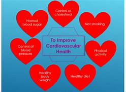

prevention to be provided for Cardiovascular health
Preventive cardiology is a specialty of cardiology that helps you manage heart disease risk factors before they get worse. Cardiology is a branch of internal medicine that focuses on your heart and blood vessels. So, preventive cardiology focuses on early prevention to keep your heart and blood vessels healthy. It’s a form of preventive medicine that can make a big impact on your health and well-being.

- Eat healthy balanced diet.
- Be more physically active.
- keep to healthy weight.
- Reduce your alcohol consumption.
- Keep your blood pressure under control.
- Give up smoking.
- Lowering your blood sugar.
- Lowering your "bad" cholesterol.
Eat healthy balanced diet:
A low fat ,high fibre diet is recommended whica low-fat, high-fibre diet is recommended, which should include plenty of fresh fruit and vegetables (5 portions a day) and whole grains.
There are 2 types of fat: saturated and unsaturated. You should avoid food containing saturated fats, because these will increase the levels of bad cholesterol in your blood.
Foods high in saturated fat include:
- meat pies.
- sausages and fatty cuts of meat.
- butter.
- ghee – a type of butter often used in Indian cooking.
- lard.
- cream.
- hard cheese.
- cakes and biscuits.
- foods that contain coconut or palm oil.
Be more physically active:
Combining a healthy diet with regular exercise is the best way of maintaining a healthy weight. Having a healthy weight reduces your chances of developing high blood pressure.
Regular exercise will make your heart and blood circulatory system more efficient, lower your cholesterol level, and also keep your blood pressure at a healthy level.Exercising regularly reduces your risk of having a heart attack. The heart is a muscle and, like any other muscle, benefits from exercise. A strong heart can pump more blood around your body with less effort.
Keep to healthy weight:
A GP or practice nurse can tell you what your ideal weight is in relation to your height and build. Alternatively, find out what your body mass index (BMI) is by using our BMI calculator.
Reduce your alcohol consumption:
If you drink, do not exceed the maximum recommended limits.
men and women are advised not to regularly drink more than 14 units a week
spread your drinking over 3 days or more if you drink as much as 14 units a week
Always avoid binge drinking, as this increases the risk of a heart attack.
Keep your blood pressure under control:
You can keep your blood pressure under control by eating a healthy diet low in saturated fat, exercising regularly and, if needed, taking medicine to lower your blood pressure.
Your target blood pressure should be below 140/90mmHg. If you have high blood pressure, ask a GP to check your blood pressure regularly.
Give up smoking:
You can keep your blood pressure under control by eating a healthy diet low in saturated fat, exercising regularly and, if needed, taking medicine to lower your blood pressure.
Your target blood pressure should be below 140/90mmHg. If you have high blood pressure, ask a GP to check your blood pressure regularly.
Lowering your blood sugar:
Avocado. Avocados are a trendy food these days, and that is for good reason.
Beans. Beans are high in protein, fiber, vitamins, minerals, and nutrients.
- Fish.
- SpinaNuts and nut butters.
- Oats and oat.
- Cinnamon.
Lowering your "bad" cholesterol:
- Ban Trans Fats.
- Scale Back.
- Get Moving.
- Fill Up on Fiber.
- Opt for Olive Oil.
- Go Fish.
- Nuts.
- Chill Out.